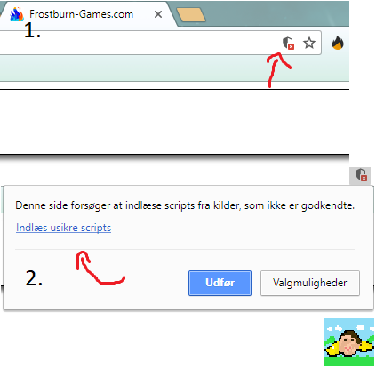

Welcome to FrostBurn Games
Frontpage
Local-settings
Gamelist
Sorry, your browser does not support JavaScript, please use a suitable browser instead like Chrome
Benji Bird
Remeber to allow insecure scripts

Made by
KRESTEN